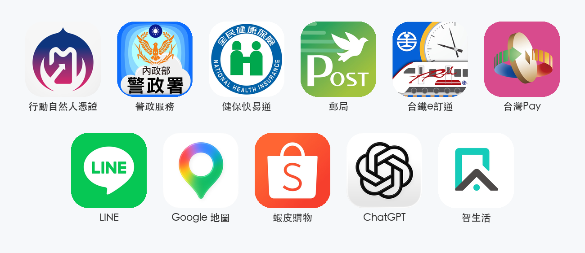

海纜斷了，你手機裡的 App 還能用嗎？
實測十一款常用 App：政府與公股的關鍵資料多半留在島內；LINE、蝦皮的大腦在海外；連線顯示台灣，斷了也不一定能用。
撰文／周詳 編輯／鍾依靜

台灣對外網路幾乎全靠海底電纜。一旦海纜中斷，手機訊號可能還在，但 LINE、健保、警政報案、交通訂票等 App 卻不見得開得了。
開放文化基金會（OCF）今夏實測 11 款常用 App，六款與政府、公股相關，包含行動自然人憑證、警政服務、健保快易通、郵局、台鐵 e 訂通、台灣Pay；另外五款則是民間服務，有 LINE、Google 地圖、蝦皮購物、ChatGPT、智生活。追蹤封包實際送到哪裡後，研究人員發現，有的 App 後端就在島內，有的在日本、新加坡，還有一批連線看似落在台灣，但與世界失聯後，這些 App 能否獨自運轉，連研究者也無法斷定。
如果明天台灣對外的海底電纜全部中斷，你的手機會變成什麼樣子？
訊號燈可能還亮著，島內基地台和島內光纖不一定會跟著停。真正的問題在於，你點開的每一個 App，背後那台電腦住在哪裡？
住在台北機房，路還通；住在東京、新加坡或美國，海纜一斷，那條路就沒了。
這個假設並不遙遠。四面環海的台灣是海島，國際頻寬高度仰賴海纜，馬祖就曾因纜線中斷而對外通訊受阻。OCF 的 SRTT 計畫無法在實驗室裡把海纜剪斷，於是在今年七月，研究人員用 iPhone 逐一打開這十一款 App，記錄每一筆連線實際落在哪個國家、哪家機房。
完整技術細節寫在綜合報告，測試方法見怎麼測試 App 韌性？。對一般人來說，更迫切的問題是：那時，你還能報案嗎？還能看健康存摺嗎？還能傳 LINE、網購、問 ChatGPT 嗎？
政府、公股六款：關鍵資料留在島內
內政部的行動自然人憑證，身分驗證與簽章全部送往政府的「政府服務網路」（GSN）。警政服務 App 的 110 定位報案會送出手機號碼和 GPS，失竊車輛、通緝查詢會送出車牌或身分資料，複測確認這些請求都進了台灣政府網路，沒有出境。
健保快易通更敏感，就醫、用藥、檢驗、健檢紀錄都在健康存摺裡，同樣以加密請求送往健保署在 GSN 上的主機，沒有經過 AWS、Google 或微軟的公有雲。
郵局的郵務和商城，分散在中華電信、遠傳、台灣固網等島內機房。
台鐵 e 訂通的訂票走中華電信。
台灣Pay 的掃碼付款、繳費、轉帳、乘車碼，核心也在中華電信與新世紀資通。
這六款的共同點是危急時真正要用的資料，走的都是政府專網或台灣電信業者的機房，封包不必出島。只要島內網路還在，就算海纜斷了，報案、查病歷、用憑證、寄包裹、訂車票、付款，原則上都還做得成。
但這不代表整個 App 都完好，例如警政服務裡的「165 打詐儀錶板」前端架在東京的 AWS，則會先消失；165 反詐騙服務頁本身仍在中華電信，跟儀錶板走的是不同的路徑。健保署公開網站則是走新興資安大廠 Cloudflare，找醫院的地圖走 GCP（Google Cloud Platform），官網或地圖可能卡住，健康存摺卻不靠它們。郵局據點地圖的底圖來自 Cloudflare，畫面可能缺一塊，交易後端仍在。台灣Pay 官網則有一條交由金融級的國際資安老字號 Akamai 進行防護，「便利生活」裡的電商圖片甚至放在東京，錢包核心卻還在島內。
同一個 App 常常一半活著、一半停擺。危急時還能用的，往往是最陽春的核心功能，旁邊的儀錶板、廣告和官網反而先投降。
民間服務：LINE 傳不出去、蝦皮結不了帳，因為路斷了
民間服務的情況很不一樣，通訊和購物首當其衝。
LINE 傳訊息的核心閘道不在台灣，實測延遲約三十五毫秒，落點在日本，請求確實要跨海，並非只是經過一個設在台灣的加速節點。海纜一斷，聊天幾乎可以確定停擺，包含貼圖、點數、音樂、雲端發票這些連回日本原站的功能，也會一起靜音。
LINE Bank、LINE Pay 走台灣的銀行機房，金融功能比較有機會保留，但對多數人來說，LINE 首先是通訊軟體，而通訊這條，屆時難以指望。
蝦皮更分裂，商城首頁確實在台灣，圖片也常經過島內的加速節點，打開 App 也許還看得到商品牆，但下單介面、付款、直播設定卻都在新加坡。海纜中斷後，你可能還滑得動，但帳結不了。這兩款 App 的問題與資料外洩無關，民間平台本來就把大腦放在海外，服務的前提就是跨境，歌舞昇平時無感，等到斷纜那天才發現，手機開得了，訊息卻傳不出去，東西也買不成。
連線顯示「台灣」，斷了也不一定能用
Google 地圖、ChatGPT、智生活同屬民間服務，連線速度最快，也最容易讓人誤會，是這次觀察中最需要向民眾說清楚的部分。
Google 地圖幾乎所有流量都進 Google 自己的網路，這次的連線節點都判定在台灣，延遲只有五到十毫秒。ChatGPT 的對話全程經過 Cloudflare 的台灣節點，流向單純。智生活是台灣品牌，管理社區公告、包裹、住戶身分，後端卻幾乎全放在 Google Cloud，即時資料庫還指向美國中部。
報表上，這些都會寫「台灣」，但那只代表平常進門時會經過台灣的門口。門口後面的廚房，也就是真正算路、生成回覆、存放住戶資料的原站，不一定在這座島上，邊緣節點平常也要跟全球控制中心保持同步。
這並不表示應該避開三大雲（AWS、Microsoft Azure、Google Cloud），或避開 Cloudflare、Akamai 這類內容傳遞網路。
三大雲讓服務能隨流量伸縮，某個機房故障時可以改走其他區域，這本身就是韌性。Cloudflare、Akamai 把內容送到離使用者近的節點，平常讓網頁變快，也分散單一機房被打垮的風險。許多政府與民間服務靠它們，才能在流量尖峰、網路攻擊、硬體損壞時撐得住，這些好處都是真的。
需要多問的只有一件事：當台灣對外海纜中斷、島內與世界暫時失聯，這套全球網路的台灣節點，能不能獨自把服務撐住？封包觀察回答不了這個問題，必須由業者說明，或靠真正的斷纜演習才能得知。使用雲端與加速網路，跟把「斷纜後還能不能用」問清楚，兩者並不衝突。
因此，Google 地圖那時能否供圖、算路，得問 Google；事先下載的離線地圖，也許還能在手機上撐一陣子。ChatGPT 的大腦在美國的 OpenAI，生成式 AI 很難只靠邊緣快取運作，在 Cloudflare 與 OpenAI 說明清楚之前，不宜假設海纜斷了還能聊天。智生活的社區門禁、公告還能不能用，要問 Google，也要問業者把原站放在哪個區域。
政府、公股相關的 App 也踩在這塊模糊地帶上。健保官網的人機驗證、郵局地圖、台灣Pay 進站、LINE 部分新聞頁，都可能因為 Cloudflare 或 Akamai 而卡住，即使核心功能還在島內。
研究能確定的是，這次的連線落在台灣節點；無法確定的是，這個節點與總部失聯後，門還開不開得了。
一張平常看不見的路線圖
七月的實測，發生在海纜都還完好的日子。它看見的是平常封包往哪裡去，無法取代一場真正的中斷，也無法保證 DNS、憑證、推播在孤島狀態下不會連鎖故障。
比較有把握的是，政府、公股這六款的核心服務走 GSN、中華電信這類島內基礎設施，報案、病歷、證件、郵務、台鐵、付款，在設計上都沒有把關鍵資料放到海外雲。幾乎可以確定那時會失靈的，是民間服務中大腦本來就在日本、新加坡的通訊與結帳。至於三大雲和全球加速網路，它們提升的是平常的擴展性與韌性，面對海纜中斷這種台灣特有的風險，還需要業者另外確認，但這不構成停用它們的理由。
落到生活上，意義很具體。家人聯繫別只押在 LINE，買民生用品別只靠蝦皮。110 和健保快易通值得留在手機裡，就算儀錶板或官網打不開，也不代表報案和病歷跟著消失。
雲端與加速網路把節點放在台灣，平常讓服務更快、更穩，至於它們有沒有「孤島模式」，只有業者自己知道，而這正是需要問清楚的地方。「資料中心在台灣」和「連線節點在台灣」，海纜完好時說的是同一件事；海纜斷了，意思可能天差地遠。